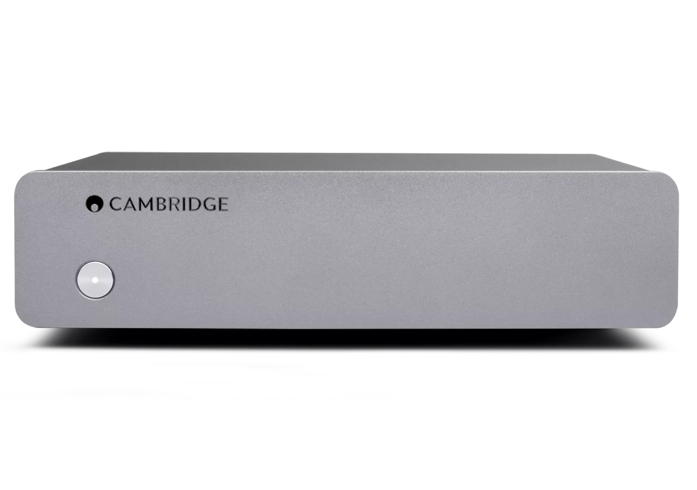
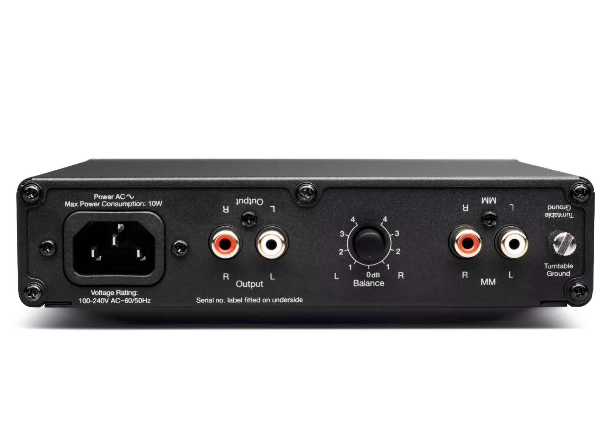
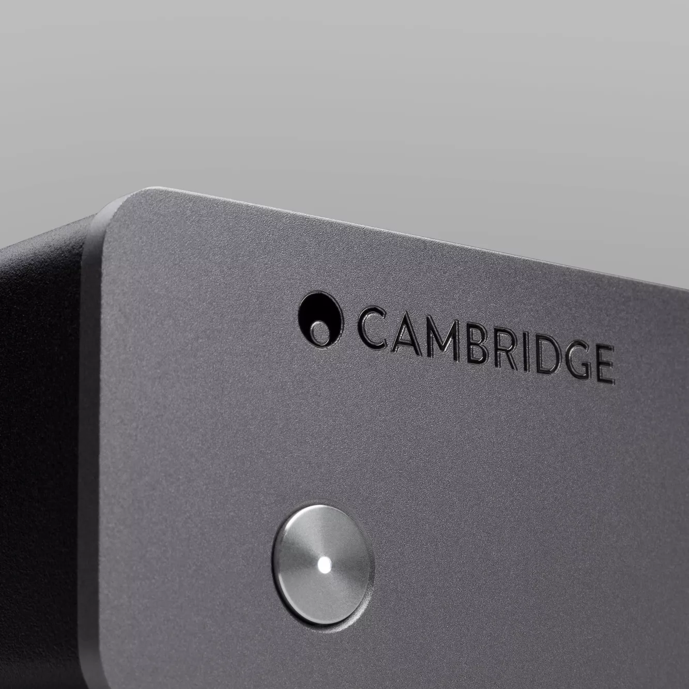
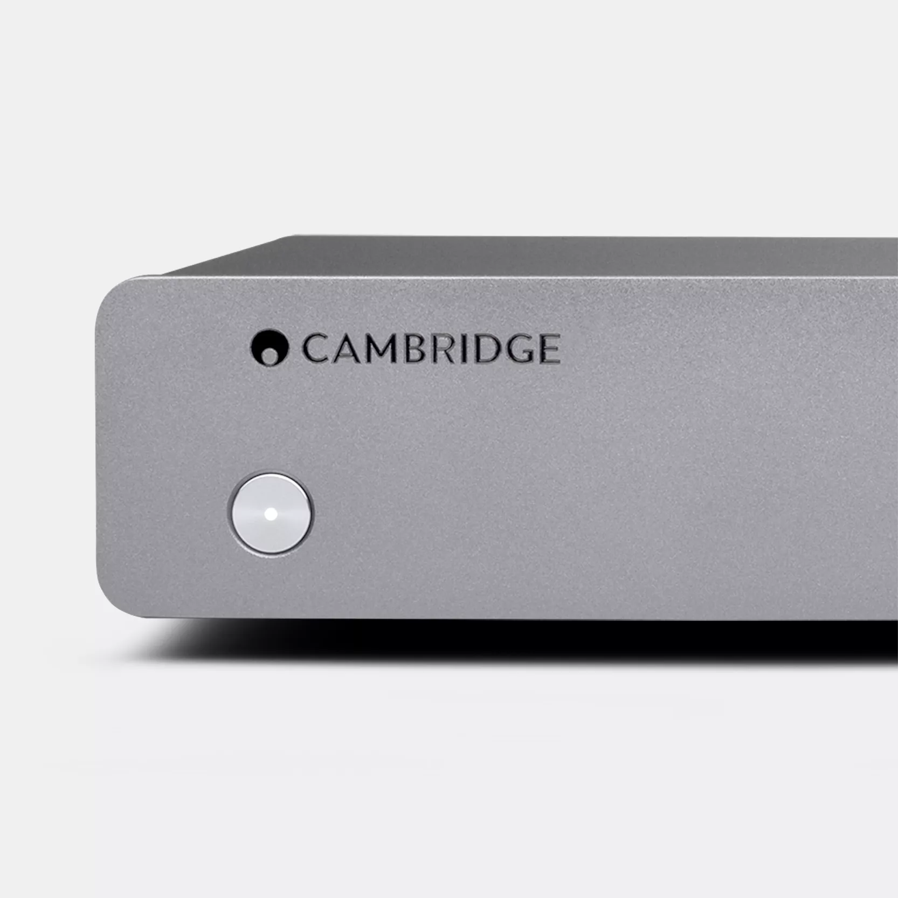
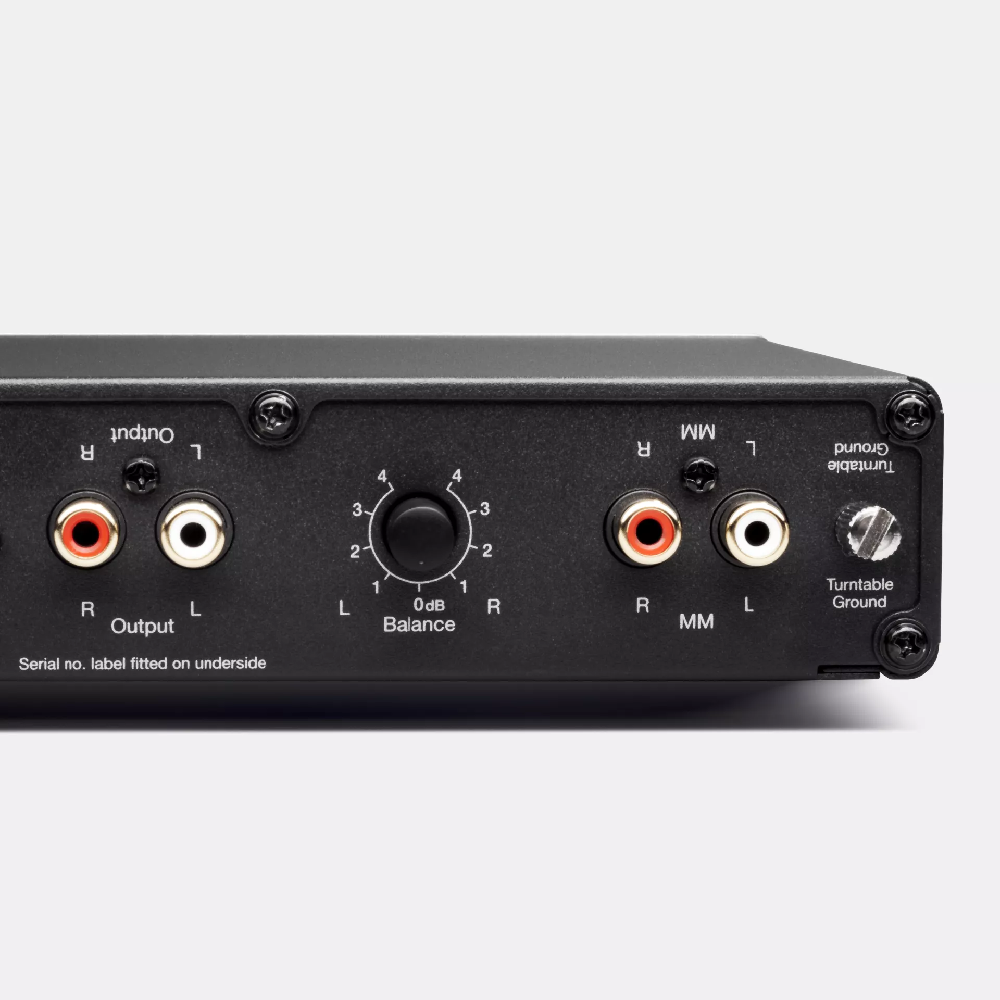
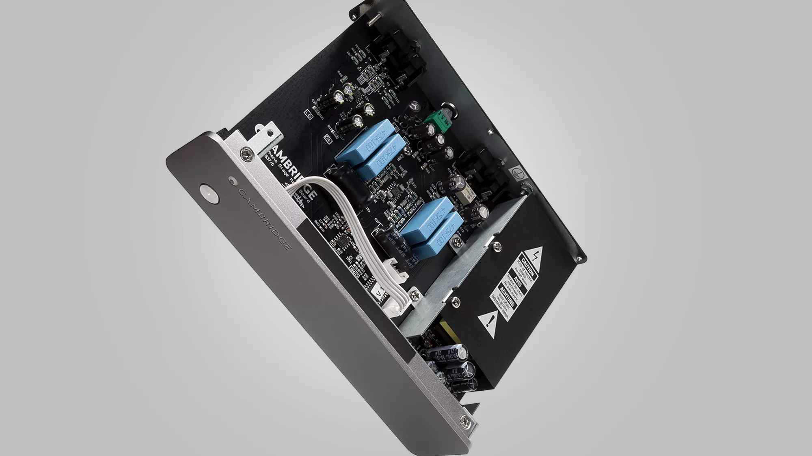
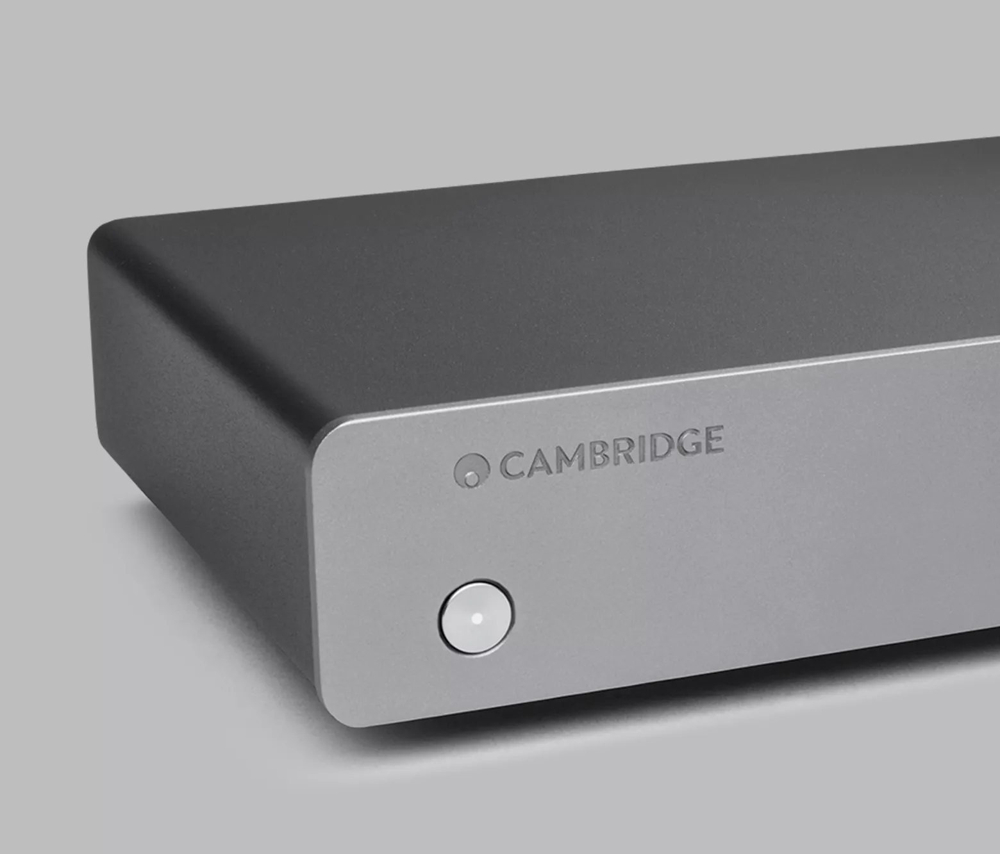
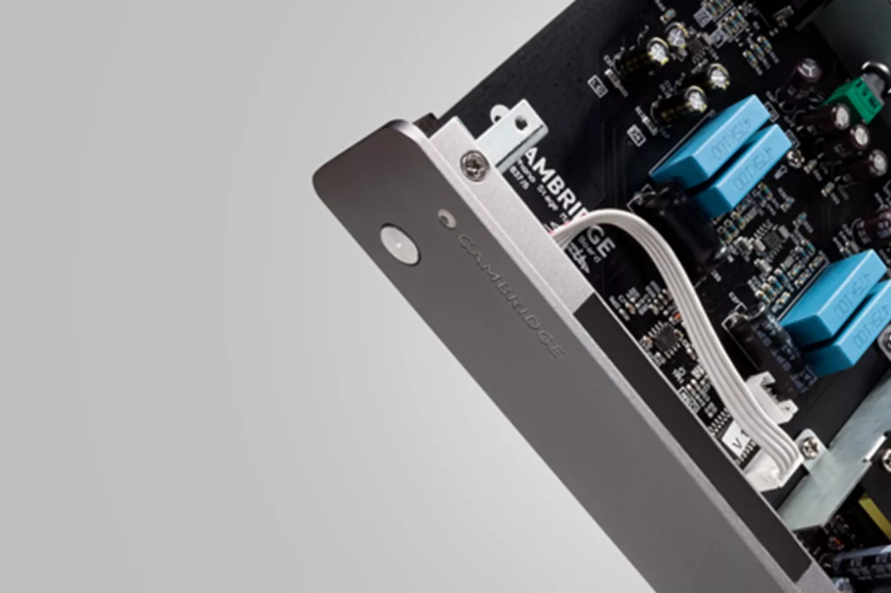

Alva Solo
コンパクトなムービングマグネット・フォノステージで、レコードコレクションの隅々までディテールをお楽しみください。



ターンテーブルに最適なパフォーマンス
多くのHi-Fiアンプはターンテーブルの直接接続に対応していません。Alva Soloの専用フォノプリアンプが、ターンテーブルからの微弱な信号を適切に増幅し、すべての再生においてクリーンで豊かな、バランスの取れたサウンドをお届けします。
クリスタルクリアな再生
Alva Soloは精密なエンジニアリングでヴァイナルの温もりと深みを忠実に再現します。スイッチモード電源がハムを低減し、洗練された回路設計がノイズを最小限に抑制 — すべての音符がクリスプでクリア、原盤に忠実なまま。
バランスの取れたサウンド、妥協なし
経年変化もAlva Soloには問題ありません。サブソニックフィルターが劣化したレコードの不要な低周波ランブルを除去し、バランスコントロールがカートリッジの不均衡を補正。完璧に整ったサウンドステージと、没入感あふれるリスニング体験をお届けします。

VINYL AS IT'S SUPPOSED TO SOUND
針がレコードに触れた瞬間から、ヴァイナルは独特の温もりとキャラクターを放ちます。Alva Soloは最先端のエンジニアリングでその音を忠実に再現。先進的なスイッチモード電源と表面実装回路基板が不要なノイズを排除し、レコード本来のサウンドをそのままお届けします。


ヴァイナルの温もり、シンプルな操作
専用フォノプリアンプ
ムービングマグネットカートリッジからの微弱な信号をブーストし、あらゆるHi-Fiシステムでクリアでダイナミックな再生を実現します。
スイッチモード電源
ノイズを低減し効率を向上させ、よりクリアで歪みのない再生を実現します。
サブソニックフィルター
劣化したレコードによる低周波ランブルを除去し、よりクリーンで洗練されたサウンドを実現します。
表面実装回路基板
信号の純度に最適化された設計で、レコードのすべてのディテールを忠実に再現します。
オートパワーダウン
20分間の無操作後に自動的にオフになり、エネルギーを節約します。
"Cambridge Audioの最高品質MMフォノステージ、Solo Phono Preamplifierで、レコードアルバムを最大限にお楽しみください"
エコフレンドリーなリスニング
Alva Soloはレコードにも地球にも優しい設計です。スタンバイ時の消費電力は0.5W未満、20分間の無操作後にオートパワーダウン機能が作動。効率的で、世界中のあらゆる電圧に対応します。